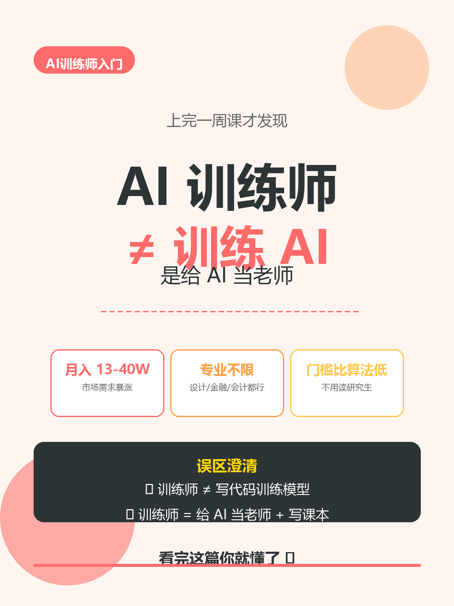
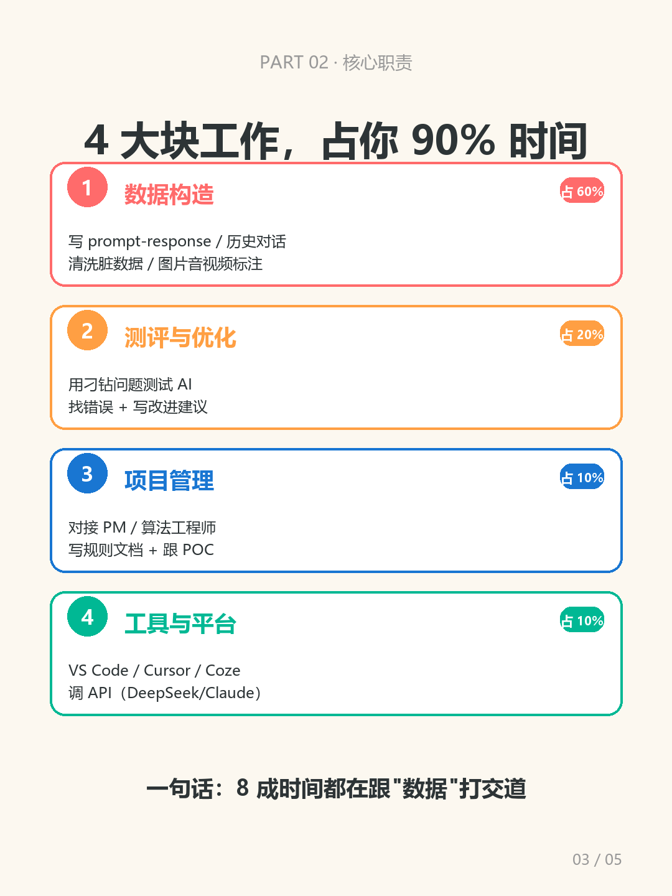
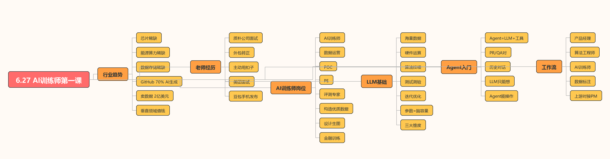

零散笔记和素材，需要手动整理成面试表达。
Structure data into model behavior
Prompt
Annotation
Evaluation
Agent workflow
Structure data into model behavior
Prompt
Annotation
Evaluation
Agent workflow
Profile
个人介绍
我把 AI 训练师理解为连接“业务目标、优质数据、模型表现”的角色。工作重点不是堆概念，而是把需求拆成可执行的数据标准、评测问题、Prompt 样例和改进建议。当前网站是一个持续更新的作品档案，后续会继续加入真实项目、照片、视频和更多笔记。
沉淀为 6 个可讲解的 AI 训练师知识模块。
形成一个可持续更新的个人作品网站。
Capability
能力结构
提示词工程
围绕任务目标、上下文、角色、约束和输出格式设计 Prompt，让模型回答更稳定、更可评测。
数据标注规范
将标注内容、query 理解、case 示例和备注口径写成规则，降低多人标注时的理解偏差。
模型评测
通过真实问题、边界问题和反常问题测试模型，记录错误类型并整理优化方向。
Agent 工作流
理解 Agent = LLM + 工具调用，能把模型能力接入文件、网页、API 与本地工作流。
Obsidian Notes
知识成果
训练师是在准备 AI 的学习资料
从 Obsidian 笔记提炼：AI 训练师的核心是构造优质数据，包括 PR 数据对、QA 对、多轮上下文和多模态标签。
PR、QA、上下文是基本数据结构
Prompt-Response 适合任务样本，QA 适合问答场景，上下文决定多轮对话中的角色、语气和约束。
Agent = LLM + 工具调用
大模型负责思考，工具负责执行。Agent 的关键价值是把“输出文本”推进到“完成任务”。
评测要产出改进路径
好的评测不是只判断对错，而是记录答错、答偏、答不稳的原因，并形成可复用的测试集。
标注规范要降低主观差异
标注规则需要明确“标什么、怎么判、边界怎么处理”，并配足正反案例。
API 三要素：地址、密钥、模型
Endpoint 决定请求位置，API Key 决定权限，model 决定调用能力。理解这三点后才能把 AI 接入工具链。
Visual Archive
学习成果图集



Selected Work
作品展示
Playable Demo
俄罗斯方块
这是之前完成的网页作品，已直接嵌入本页面。
Interest
兴趣爱好：唱歌
这一块用于展示个人表达能力和镜头表现。你提供视频后，我会把这里替换成正式播放器。
Video Slot
唱歌视频待加入
Contact
联系我
Email1711529766@qq.com
WeChat19817800663